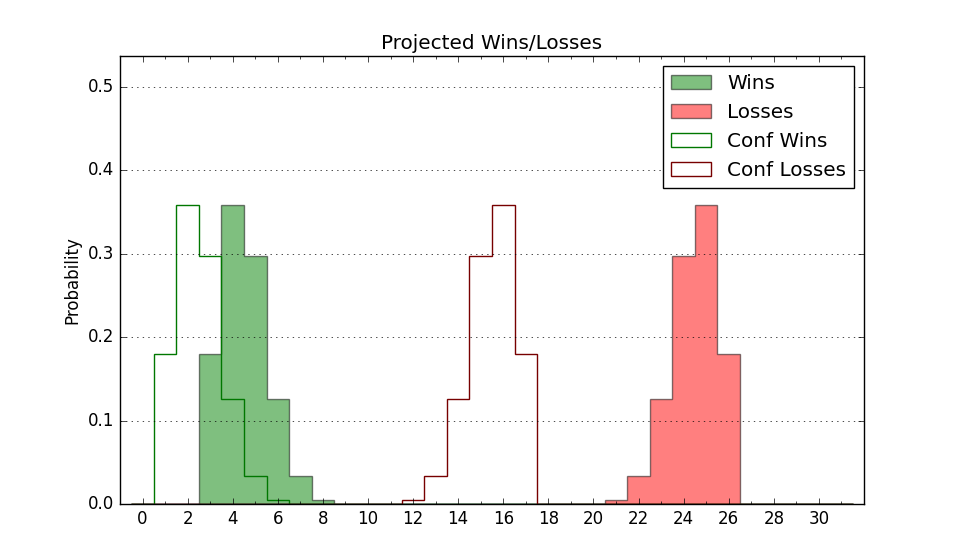

| Home | Game Probabilities | Conferences | Preseason Predictions | Odds Charts | NCAA Tournament |
| City: | Monroe, Louisiana | |
| Conference: | Sun Belt (13th)
| |
| Record: | 1-8 (Conf) 3-17 (Overall) | |
| Ratings: | Comp.: -18.3 (338th) Net: -18.7 (338th) Off: 93.7 (344th) Def: 112.4 (291st) SoR: 0.0 (148th) |
| Remaining | ||||||
|---|---|---|---|---|---|---|
| Date | Opponent | Win Prob | Pred. | |||
| 1/30 | @ South Alabama (132) | 6.4% | L 57-75 | |||
| 2/1 | @ Troy (101) | 4.3% | L 58-79 | |||
| 2/5 | @ Georgia St. (299) | 24.5% | L 70-78 | |||
| 2/13 | Texas St. (166) | 23.7% | L 68-76 | |||
| 2/15 | Southern Miss (268) | 45.1% | L 71-72 | |||
| 2/19 | @ Texas St. (166) | 8.4% | L 64-80 | |||
| 2/22 | @ Arkansas St. (94) | 3.8% | L 60-83 | |||
| 2/25 | James Madison (142) | 19.7% | L 67-76 | |||
| 2/28 | Arkansas St. (94) | 11.8% | L 65-79 | |||
| Previous | Game Score | |||||
| Date | Opponent | Win Prob | Result | Off | Def | Net |
| 11/6 | @LSU (53) | 1.6% | L 60-95 | -0.9 | -6.1 | -7.0 |
| 11/8 | @Tulane (140) | 6.7% | L 64-80 | -3.8 | 8.3 | 4.5 |
| 11/12 | @Rice (181) | 9.5% | L 50-66 | -17.6 | 14.4 | -3.2 |
| 11/18 | Southeastern Louisiana (209) | 30.9% | L 67-70 | 2.9 | 4.1 | 6.9 |
| 11/22 | @Northwestern St. (233) | 14.7% | W 65-63 | 5.8 | 13.4 | 19.3 |
| 11/23 | (N) North Alabama (137) | 11.6% | L 62-74 | 0.6 | 3.6 | 4.2 |
| 11/29 | Stephen F. Austin (234) | 37.2% | L 60-68 | 3.5 | -14.5 | -11.0 |
| 12/2 | UT Arlington (191) | 27.9% | L 70-84 | -8.6 | -8.4 | -17.0 |
| 12/11 | Arkansas Pine Bluff (363) | 84.5% | W 89-73 | -2.5 | 6.6 | 4.1 |
| 12/14 | @UT Arlington (191) | 10.2% | L 68-77 | 3.1 | 8.1 | 11.2 |
| 12/17 | Houston Baptist (259) | 42.3% | L 68-74 | -4.0 | -2.4 | -6.4 |
| 12/21 | Old Dominion (327) | 61.5% | L 75-80 | -1.7 | -12.9 | -14.6 |
| 1/2 | @Georgia Southern (273) | 20.3% | L 82-90 | 27.8 | -21.5 | 6.3 |
| 1/4 | @Coastal Carolina (317) | 28.6% | L 51-70 | -18.3 | 0.3 | -18.1 |
| 1/9 | @Southern Miss (268) | 19.4% | L 67-84 | -3.7 | 5.3 | 1.6 |
| 1/11 | @Louisiana Lafayette (341) | 36.4% | L 68-71 | 2.8 | -0.0 | 2.8 |
| 1/15 | Troy (101) | 13.4% | L 58-77 | -3.4 | -10.9 | -14.2 |
| 1/18 | Louisiana Lafayette (341) | 66.1% | L 60-65 | -16.7 | 0.8 | -15.9 |
| 1/25 | Appalachian St. (143) | 19.7% | L 58-66 | -1.2 | 0.9 | -0.3 |
| 1/27 | South Alabama (132) | 18.8% | W 77-66 | 23.5 | 14.2 | 37.8 |
| Stats & Trends | |||||
|---|---|---|---|---|---|
| Current | Day | Week | Month | Season | |
| Composite | -18.3 | -0.0 | +2.0 | -0.3 | -7.8 |
| Comp Rank | 338 | -1 | +10 | +5 | -63 |
| Net Efficiency | -18.7 | -0.0 | +2.4 | +1.2 | -- |
| Net Rank | 338 | -2 | +9 | +9 | -- |
| Off Efficiency | 93.7 | -0.0 | +1.6 | +1.5 | -- |
| Off Rank | 344 | -- | +7 | +3 | -- |
| Def Efficiency | 112.4 | +0.0 | +0.7 | -0.2 | -- |
| Def Rank | 291 | +2 | +14 | +6 | -- |
| SoS Rank | 320 | -6 | +12 | +1 | -- |
| Exp. Wins | 4.5 | +0.0 | +0.7 | -1.6 | -7.1 |
| Exp. Conf Wins | 2.5 | +0.0 | +0.7 | -1.6 | -4.3 |
| Conf Champ Prob | 0.0 | -- | -- | -- | -1.5 |

| Advanced Stats | ||
|---|---|---|
| Stat | Value | Rank |
| Off Eff FG % | 0.443 | 349 |
| Off Ast Ratio | 0.132 | 262 |
| Off ORB% | 0.277 | 217 |
| Off TO Rate | 0.149 | 177 |
| Off FT Ratio | 0.284 | 308 |
| Def Eff FG % | 0.547 | 307 |
| Def Ast Ratio | 0.176 | 348 |
| Def ORB% | 0.297 | 225 |
| Def TO Rate | 0.145 | 203 |
| Def FT Ratio | 0.274 | 58 |